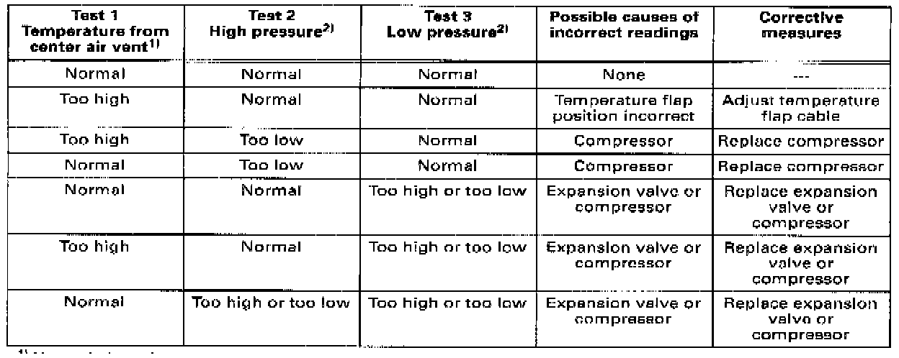

Checking A/C Refrigerant System Pressures
Check A/C refrigerant system pressures using these three tests:1 - Air temperature drop from center instrument panel vent (A/C system cooling performance)
2 - A/C system high pressure
3 - A/C system low pressure
The combined results of all three steps determine which part of the A/C system is causing the problem, See table below.
Test conditions
- A/C refrigerant system fully charged; discharge, evacuate and recharge system if necessary
- Condenser and radiator clean and free of obstructions (spray clean if necessary)
- Air distribution can be adjusted correctly using control knobs (all air distribution flaps reach end positions)
- No wiring problems as per wiring diagram
- Outside (ambient) air temperature between 20-30 °C (18-86 °F)
- Drive belts for A/C compressor and Generator in good condition and properly tensioned
Test 1: Checking air temperature drop from center instrument panel vent (A/C system cooling performance)
- Start engine.
- Adjust air distribution so air flows from instrument panel vents.
- Set temperature control knob to full "cold" position (against stop).
- Set fresh air blower to second speed (position 2).
- Insert thermometer into center instrument panel vent.
- Switch A/C on by pressing A/C "Norm" button.
- Raise engine speed to 2000 RPM.
Specified result
With humidity normal and outside (ambient) temperature between 20-25 °C (68-77 °F), system is cooling satisfactorily if air temperature from center instrument panel vent drops below 10 °C (50 °F) within 1 minute.
For higher ambient temperatures and/or higher humidity, specified air temperature from center instrument panel vent can be slightly higher.
If specified reading is not obtained. perform tests 2 and 3. then compare results of all three tests See table below.
Test 2: Checking A/C system high pressure
- Connect high- and low-pressure hoses of refrigerant recovery/ recycling/recharging unit Kent-Moore ACR4 or equivalent, to high- and low-pressure service valves.
- Disconnect coolant fan connector.
- Adjust air distribution knob to footwell outlets.
- Adjust temperature control knob to full hot.
- Set fresh air blower to high speed (position 4).
- Start engine.
- Switch Max. A/C on by pressing A/C Max. button.
- Raise engine speed to 1500 RPM.
Specified result
System high pressure is normal if high-pressure gauge reads 232 psi (16 bar) within 30 seconds.
If specified reading is not obtained, also perform test 3 and core pare results of all three tests See table below.
Test 3: Checking A/C system low pressure
- Connect high- and low-pressure hoses of refrigerant recovery/recycling/recharging unit Kent-Moore ACR4, or equivalent, to high- and low-pressure service valves.
- Adjust air distribution knob to instrument panel outlets.
- Adjust temperature control knob to full cold.
- Set fresh air blower to low speed (position 1.
- Start engine.
- Switch A/C on by pressing A/C Norm button.
- Raise engine speed to 1500 RPM.
Specified result
System low pressure is normal if low-pressure gauge reads 22-36 psi (1.5-2.5 bar) within 30 seconds.
If specified reading is not obtained, compare results of all three tests See table below.
Table:

1) Normal air outlet temperature approx. 43 °F (6 °C).
2) For normal system temperatures and pressures, Pressure, Vacuum and Temperature Specifications